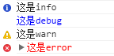
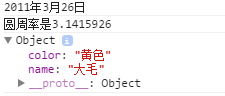
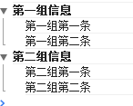

显示信息的命令
console.info("这是info");
console.debug("这是debug");
console.warn("这是warn");
console.error("这是error");

占位符
console.log("%d年%d月%d日",2011,3,26);
console.log("圆周率是%f",3.1415926);
var dog = {} ;
dog.name = "大毛" ;
dog.color = "黄色";
console.log("%o",dog);

分组显示
console.group("第一组信息");
console.log("第一组第一条");
console.log("第一组第二条");
console.groupEnd();
console.group("第二组信息");
console.log("第二组第一条");
console.log("第二组第二条");
console.groupEnd();

其他功能
console.dir()可以显示一个对象所有的属性和方法。
console.dirxml()用来显示网页的某个节点（node）所包含的html/xml代码。
console.assert()用来判断一个表达式或变量是否为真。如果结果为否，则在控制台输出一条相应信息，并且抛出一个异常。
console.trace()用来追踪函数的调用轨迹。
console.time()和console.timeEnd()，用来显示代码的运行时间。
console.profile()，console.profileEnd():性能分析（Profiler）就是分析程序各个部分的运行时间，找出瓶颈所在。